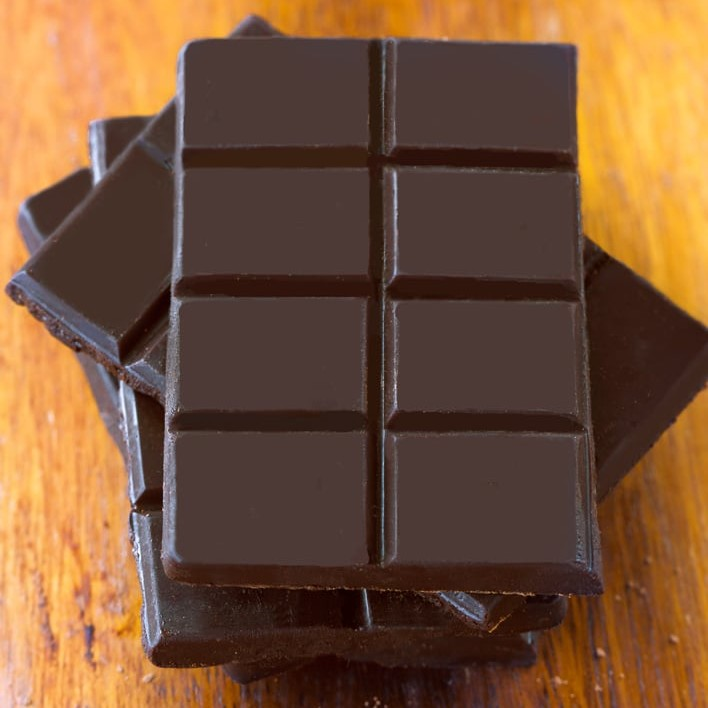

Home
Chocolate Bar Recipe

Description
Homemade Chocolate Bars - made in under 5 minutes from start to finish, with just 3 ingredients! These homemade chocolate bars pretty much make themselves.
Ingredients
- 1/4 cup cacao or cocoa powder
- 3 tbsp coconut oil
- 3 tbsp pure maple syrup, honey, or agave
- optional extracts, cocoa nibs, chia seeds, or other add-ins
Steps
- Gently warm oil if not already melted.
- Combine all ingredients in a bowl. Stir until it gets thick.
- Pour into any flat container or candy molds, or smush between layers of wax paper or in ziploc bags. Chill until solid, and store in the fridge or freezer.
- Once hardened, you can also opt to melt the bars again for chocolate sauce.